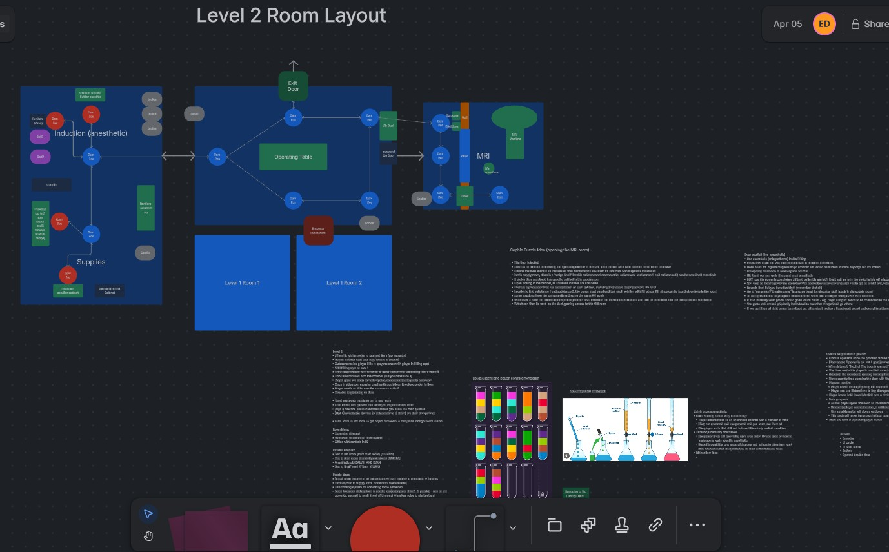
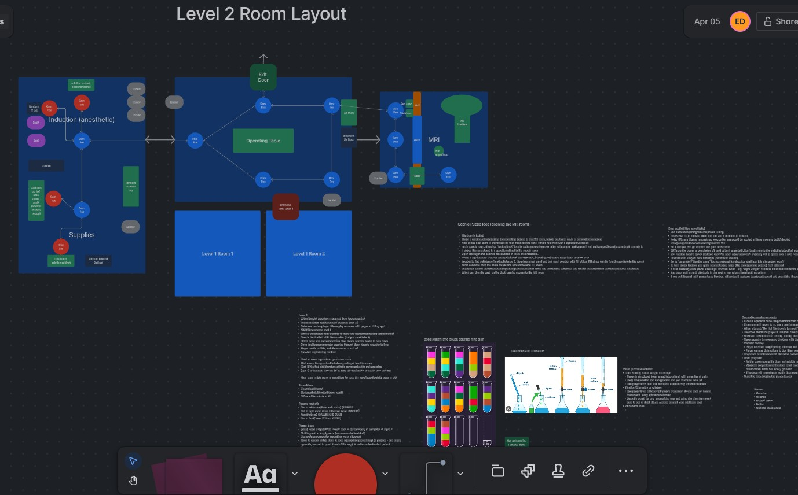

Tools
- Unity Engine
- Photoshop
- Audacity
- Confluence & Jira
- Github
Roles
Tools Programmer
- Create editor scripts to easily edit audio, movement systems
- Teach group members about tools
Gameplay Programmer
- Create movement, interaction, camera, audio systems
- Code and integrate various puzzles
Integration
- Handle import of audio and textures
- Place props and models in level
- Set up light probes and reflection probes, baking
Challenges
Scope
Most games suffer from their scope, especially towards the end of development. Stuck with 2 weeks left in development, we decided to cut 1 room and 2 puzzles from our final level. We finished on time.
Time Management
This project was created for one class - all team members had many more classes adding on to our workload. It was difficult to manage work on this project in parallel with other projects, but served as good experience in managing time effectively.
Skills Gained
New Tools
I got to use Confluence and Jira for the first time. The team decided to force ourselves to learn these tools despite being unfamiliar. It ended up being a great aid in our organization and documentation, and will serve just as useful in the future.
Team Management and Dynamics
The whole purpose of this course - Design Practice - is to gain insights into how dynamics in team projects
differ from solo projects. I got first hand experience having meetings stall and deadlock, and learned how to keep them moving.
I learned how to choose between competing ideas effectively. The importance of communication was once again highlighted. I got experience collaborating in Unity with Github while working in the same scene.
I learned lots that can only be learned by going through an entire project with a team.
Takeaways
Time and Money
You always have less than you think. This is my first long-term team project, and I got to experience first-hand how the pressure set in when we started approaching the deadline.
Going forward I'll have this project to reference when I'm planning the scope for time-limited projects.
Prioritization
Some things are more important than others, and you need to know what those things are. When the team had to cut down our scope, we went back to our pillars to decide what was crucial for the MVP.
For future projects, I want to assign items/mechanics/features "priorities" from the get go to make sure that I focus on my unknowns and my core features first. This should make it easier to de-scope when the time inevitably comes.
Gallery
 
